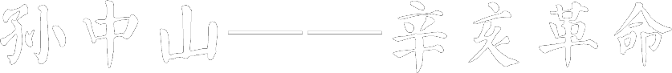

一起来看看！孙中山——辛亥革命
1866年11月12日，孙中山生于广东省香山县（今中山市）一个农民家里。孙中山小时候喜欢听洪秀全的故事，非常崇拜这位敢于反抗清政府，创立新国家的英雄。12岁时，孙中山去了夏威夷（Hawaii）。在那里学习到西方的科学文化知识。那时，孙中山最爱读的是华盛顿（George Washington）和林肯（Abraham Lincoln）的传记，进一步坚定了为国家和民族的大业而奋斗的志向。
1894年，孙中山在檀（tan）香山（Honolulu）的爱国华侨中组织了一个反清革命团体--兴中会。1905年，孙中山又在日本联合一些革命团体的成员成立了全国规模的统一革命政党--中国同盟会，立志要推翻清政府，振兴中华，建立资产阶级民主共和国。孙中山还将他的革命理想概括为"民族、民权、民生"的"三民主义"。
孙中山和革命党人秘密组织了多次武装起义，但都失败了。大批革命党人献出了宝贵的生命。1911年4月27日，广州起义爆发。起义之前，广大爱国华侨积极捐助了大量钱物，有的爱国华侨还回到广州，与国内的革命党人一起组成"敢死队"，参加起义。起义失败后，有72位烈士的遗体被合葬在广州黄花岗，他们的精神激励着国内外爱国志士继续奋斗。
1911年10月10日，长期在军队中开展革命活动的湖北革命团体文学社和共进会联合发动了武昌起义，取得成功。武昌起义的胜利掀起了革命的高潮，各省纷纷响应。一个多月当中，共有10多个省宣布独立，清王朝的统治迅速崩溃。1911年是中国农历辛亥年，历史上把这场推翻清政府的革命叫辛亥革命。
1911年12月，孙中山回国。由于他对革命事业作出的巨大贡献和他在革命党人当中的崇高威望，孙中山被推选为临时大总统。1912年1月1日，孙中山在南京宣誓就职，中华民国临时政府成立。
中华民国成立不久，袁世凯在帝国主义的支持下，逼走孙中山，窃取了临时大总统的职位，政权落入腐败的北洋军阀的手中。为了对抗北洋军阀的统治，1912年8月，以中国同盟会为主的6个政团在北京合并，成立了中国国民党。孙中山被选为理事长。